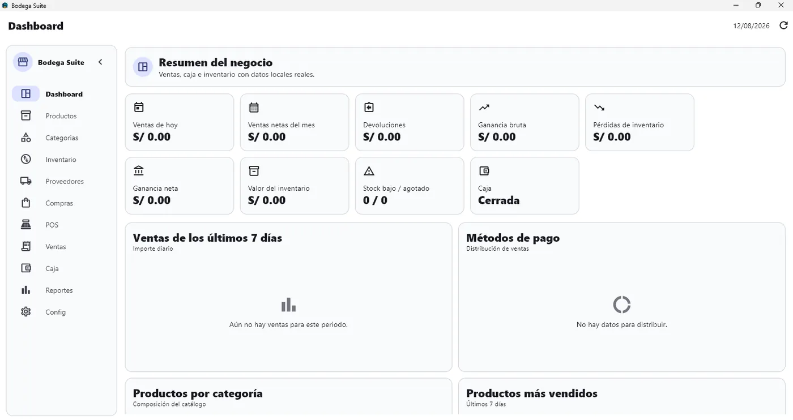
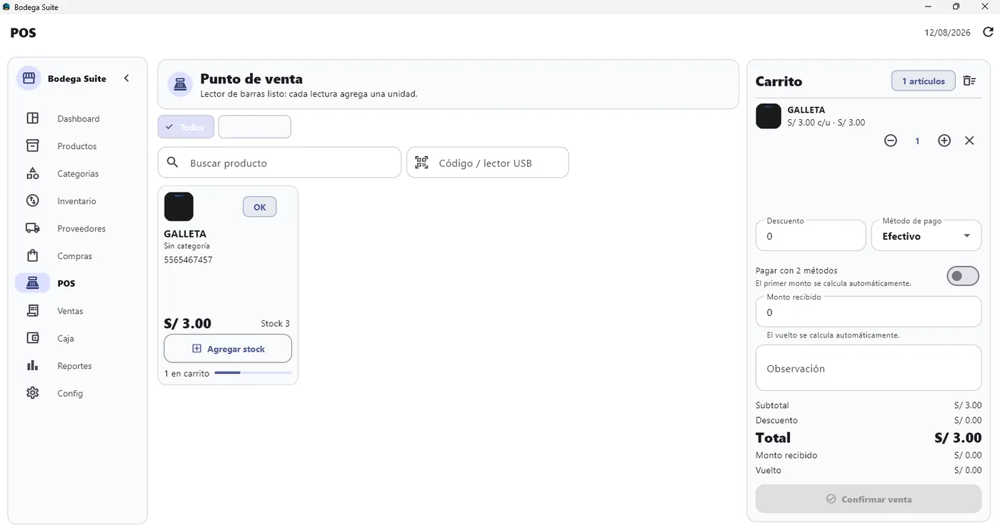
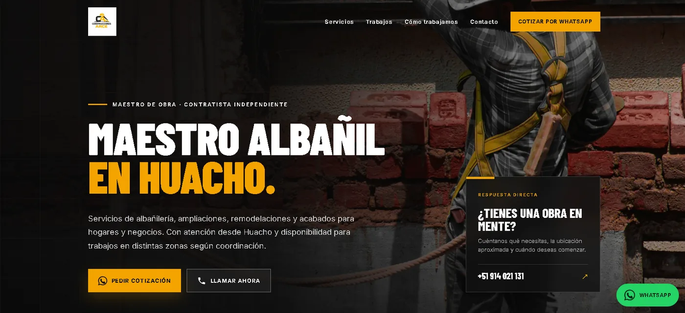
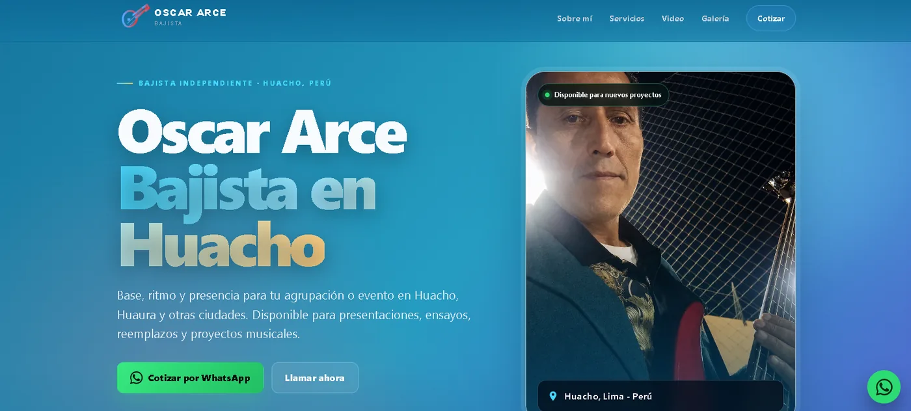

Páginas web profesionales
Webs rápidas para empresas y profesionales, preparadas para Google, celulares y contacto directo por WhatsApp.
Conocer el servicio →
Ayudo a negocios y emprendedores a vender, organizarse y crecer con páginas web profesionales, sistemas de ventas e inventario y aplicaciones hechas a medida.

Soluciones pensadas para objetivos reales: atraer consultas, vender, controlar inventario o automatizar procesos.
Webs rápidas para empresas y profesionales, preparadas para Google, celulares y contacto directo por WhatsApp.
Conocer el servicio →Sistemas POS, inventario, ventas, caja, reportes, paneles administrativos, usuarios y bases de datos.
Ver soluciones →Aplicaciones móviles y de escritorio con almacenamiento local, PDFs, funcionamiento offline e integraciones.
Ver desarrollo de apps →
Sistema multiplataforma para ventas, productos, compras, caja, proveedores, códigos de barras, reportes y copias de seguridad.

Sitio orientado a mostrar servicios, generar confianza y recibir cotizaciones de obras directamente por WhatsApp.

Web personal con presentación de servicios, galería, contenido multimedia y contacto para eventos y proyectos musicales.
La tecnología se selecciona según los objetivos, el presupuesto y la escala de la solución. Estas son algunas de las principales, además de otras cuando el proyecto lo requiere.
Comunicación directa, alcance claro y desarrollo por etapas para que siempre sepas cómo avanza tu proyecto.
Me cuentas el problema, el público y el resultado que buscas.
Organizamos funciones, contenido, tecnología, tiempo y entregables.
Construyo, pruebo y dejo la web, app o sistema listo para trabajar.
Cuéntame qué deseas mejorar en tu negocio. Revisaré tu idea y te responderé directamente para preparar una propuesta clara.